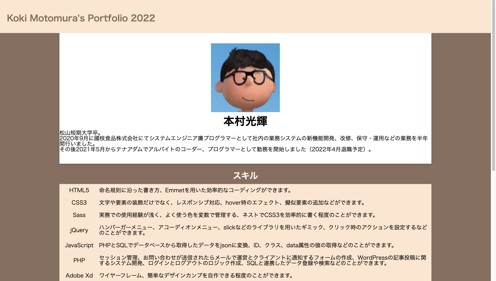

本ポートフォリオサイト

| サイトURL | https://booktown.sakura.ne.jp/motomura2022/ |
| 制作期間 | 3月25日〜4月4日、4月12日（ハンバーガーメニュー追加） |
| 使用技術 | HTML,CSS,Sass,jQuery |
| Githubリポジトリリンク | https://github.com/tusk2019/portfolio2022 |
| 説明 | 基本的なコーディングはHTMLとSass、ハンバーガーメニューはCSSとjQueryを組み合わせて作りました。 レスポンシブ対応済みです。 |